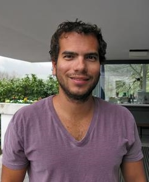

Artur Avila | |
|---|---|
 Avila at the Mathematical Research Institute of Oberwolfach in 2012. | |
| Born | Artur Avila Cordeiro de Melo 29 June 1979 Rio de Janeiro, Brazil |
| Alma mater | |
| Known for |
|
| Awards |
|
| Scientific career | |
| Fields | Mathematics |
| Institutions | |
| Thesis | Bifurcações de tranformações unimodais sob os pontos de vistas topológico e métrico (2001) |
| Welington de Melo | |
.jpg){kind=link}
Artur Avila Cordeiro de Melo (Brazilian Portuguese: [aʁˈtuʁ ˈavilɐ koʁˈde(j)ɾu dʒi ˈmɛlu]; born 29 June 1979) is a Brazilian mathematician working primarily in the fields of dynamical systems and spectral theory. He is one of the winners of the 2014 Fields Medal,[1] being the first Latin American and lusophone to win such award. He has been a researcher at both the IMPA and the CNRS (working a half-year in each one). He has been a professor at the University of Zurich since September 2018.
Biography
At the age of 16, Avila won a gold medal at the 1995 International Mathematical Olympiad[2] and received a scholarship for the Instituto Nacional de Matemática Pura e Aplicada (IMPA) to start an M.S. degree while still attending high school in Colégio de São Bento and Colégio Santo Agostinho in Rio de Janeiro.[3] He completed his M.S. degree in 1997.[4] Later he enrolled in the Federal University of Rio de Janeiro (UFRJ), earning his B.S in mathematics.[5]
At the age of 19, Avila began writing his doctoral thesis on the theory of dynamical systems. In 2001 he finished it and received his PhD from IMPA. That same year he moved abroad to France to do postdoctoral research.[6] He works with one-dimensional dynamics and holomorphic functions.[7] Since 2003 he has worked as a researcher for the Centre National de la Recherche Scientifique (CNRS) in France, later becoming a research director in 2008. His post-doctoral supervisor was Jean-Christophe Yoccoz.[8]
Mathematical work
Much of Artur Avila's work has been in the field of dynamical systems. In March 2005, at age 26, Avila and Svetlana Jitomirskaya proved the "conjecture of the ten martinis," a problem proposed by the American mathematical physicist Barry Simon.[9] Mark Kac promised a reward of ten martinis to whoever solved the problem: whether or not the spectrum of a particular type of operator is a Cantor set, given certain conditions on its parameters. The problem had been unsolved for 25 years when Avila and Jitomirskaya answered it affirmatively.[10][11] Later that year, Avila and Marcelo Viana proved the Zorich–Kontsevich conjecture that the non-trivial Lyapunov exponents of the Teichmüller flow on the moduli space of Abelian differentials on compact Riemann surfaces are all distinct.[12][13] Other than that, Avila also did notable research on dynamical billiards.[14]
Honours and recognition

Later, as a research mathematician, he received in 2006 a CNRS Bronze Medal as well as the Salem Prize, and was a Clay Research Fellow. He became the youngest professorial fellow (directeur de recherches) at the CNRS in 2008. The same year, he was awarded one of the ten prestigious European Mathematical Society prizes, and in 2009 he won the Grand Prix Jacques Herbrand from the French Academy of Sciences.[15] In 2017 he gave the Łojasiewicz Lecture (on the "One-frequency Schrödinger operators and the almost reducibility conjecture") at the Jagiellonian University in Kraków.[16]
He was a plenary speaker at the International Congress of Mathematicians in 2010.[17] In 2011, he was awarded the Michael Brin Prize in Dynamical Systems. He received the Early Career Award from the International Association of Mathematical Physics in 2012,[18] TWAS Prize in 2013[19] and the Fields Medal in 2014.[20]
He was elected a foreign associate of the US National Academy of Sciences in April 2019.[21]
Avila is a member of World Minds.
Diplomas, titles and awards
- 1993: Gold medal at the Olimpíada Brasileira de Matemática, Brazil[22]
- 1994: Gold medal at the Olimpíada Brasileira de Matemática, Brazil[22]
- 1995: Gold medal at the Olimpíada Brasileira de Matemática, Brazil[22]
- 1995: Gold medal at the International Mathematical Olympiad, Canada[23]
- 2001: PhD Thesis (advisor Welington de Melo)[24]
- 2005: Cours Peccot at the Collège de France[25]
- 2006: Invited address at the ICMP[25]
- 2006: Bronze medal of the CNRS[25]
- 2006: Salem Prize[25]
- 2008: Wolff Memorial Lectures, Caltech[26]
- 2008: Invited address at the European Congress of Mathematics[27]
- 2008: European Mathematical Society Prize
- 2009: Grand Prix Jacques Herbrand of the French Academy of Sciences[15]
- 2010: Porter Lectures, Rice University[28]
- 2010: Plenary address at the International Congress of Mathematicians[17]
- 2011: Blyth Lecture Series by the University of Toronto[29]
- 2011: Michael Brin Prize in Dynamical Systems[30]
- 2012: International Association of Mathematical Physics Early Career Award[18]
- 2013: Prize of the Brazilian Mathematical Society[31]
- 2013: TWAS Prize[19]
- 2014: Bellow Lectures by the Northwestern University[32]
- 2014: Fields Medal
- 2015: TWAS-Lenovo Science Prize[33]
- 2017: Łojasiewicz Lecture by the Jagiellonian University: One-frequency Schrödinger operators and the almost reducibility conjecture[16]
Extra-academic distinctions
- 2013: Member of the Brazilian Academy of Sciences[34]
- 2015: Knight of the Legion of Honor[35]
- 2019: Foreign associates of the National Academy of Sciences[21]
References
- ^ Alex Bellos (13 August 2014). "Fields Medals 2014: the maths of Avila, Bhargava, Hairer and Mirzakhani explained". The Guardian.
- ^ "International Mathematical Olympiad". www.imo-official.org. Retrieved 4 September 2023.
- ^ Talarico, Bruna (16 January 2010), "Gênio da matemática carioca", O Dia Online (in Portuguese), archived from the original on 22 January 2010
- ^ Pivetta, Marcos. "Artur Ávila: The man who calculates". FAPESP. Retrieved 8 July 2022.
- ^ Moreira Salles, João (January 2010), "Artur tem um problema", Piauí (in Portuguese), archived from the original on 30 June 2015
- ^ Vanessa Fajardo (12 August 2014). "Pesquisador brasileiro ganha prêmio equivalente a 'Nobel' de matemática" (in Portuguese). Grupo Globo.
- ^ "Artur Avila". Clay Mathematics Institute. Archived from the original on 18 May 2021. Retrieved 12 July 2009.
- ^ Thomas Lin; Erica Klarreich (12 August 2014). "Brazilian Wunderkind Who Calms Chaos". Quanta Magazine.
- ^ "Press Release by the IMU regarding Artur Avila's mathematical work, on the occasion of his receipt of the Fields medal" (PDF). International Mathematical Union. 14 August 2014. Retrieved 12 September 2020.
- ^ "Solving the Ten Martini Problem" (PDF) (in Portuguese).
- ^ Avila, Artur; Jitomirskaya, Svetlana (2005). "Solving the Ten Martini Problem". The Ten Martini Problem. Lecture Notes in Physics. Vol. 690. pp. 5–16. arXiv:math/0503363. Bibcode:2006LNP...690....5A. doi:10.1007/3-540-34273-7_2. ISBN 978-3-540-31026-6. S2CID 55259301.
- ^ Avila, Artur; Jitomirskaya, Svetlana (2005). "Simplicity of Lyapunov spectra: Proof of the Zorich-Kontsevich conjecture". arXiv:math/0508508.
- ^ Avila, Artur; Viana, Marcelo (2005). "Dynamics in the moduli space of Abelian differentials" (PDF). Portugaliae Mathematica. 62 (4): 531–547. S2CID 9227819.
- ^ "A Brazilian Wunderkind Who Calms Chaos". 12 August 2014.
- ^ a b "Artur Avila and Dynamics". Fondation Sciences Mathématiques de Paris. 4 July 2019. Archived from the original on 5 July 2019. Retrieved 5 July 2019.
- ^ a b "2017 Lecture - Institute of Mathematics of the Jagiellonian University". www.im.uj.edu.pl. Retrieved 25 June 2017.
- ^ a b "ICM Plenary and Invited Speakers since 1897". International Congress of Mathematicians. Archived from the original on 8 November 2017. Retrieved 14 August 2013.
- ^ a b The IAMP Early Career Award
- ^ a b "Prizes and Awards". The World Academy of Sciences. 2016.
- ^ 2014 IMU Prize Winners, archived from the original on 11 November 2017, retrieved 12 August 2014
- ^ a b "2019 NAS Election". National Academy of Sciences. 30 April 2019.
- ^ a b c "brasileiro-ganha-medalha-fields". OBM - Olimpíada Brasileira de Matemática. 4 July 2019.
- ^ "Artur Ávila Cordeiro de Melo". International Mathematical Olympiad. 4 July 2019.
- ^ "Graus de Doutor concedidos em 2001". IMPA. 4 July 2019.
- ^ a b c d Curriculum vitae (PDF), archived from the original (PDF) on 8 May 2014
- ^ "Thomas Wolff Memorial Lectures in Mathematics". Division of Physics, Mathematics and Astronomy (PMA) - Caltech. 3 July 2019.
- ^ "The 5th European Congress of Mathematics". Fondation Sciences Mathématiques de Paris. 3 July 2019. Archived from the original on 4 July 2019. Retrieved 4 July 2019.
- ^ "Un événement quadriennal : Le congrès international des mathématiciens" (PDF). Société de Mathématiques Appliquées et Industrielles. 3 July 2019.
- ^ "Blyth Lecture Series". University of Toronto. 3 July 2019.
- ^ Bellos, Alex (13 August 2014), "Fields Medals 2014: the maths of Avila, Bhargava, Hairer and Mirzakhani explained", The Guardian,
Among his [Avila's] previous honors are ... the Michael Brin Prize (2011)
. - ^ "SBM Prize". Brazilian Mathematical Society. 3 July 2019.
- ^ "Bellow Lecture Series". Northwestern University. 3 July 2019. Archived from the original on 28 January 2021. Retrieved 4 July 2019.
- ^ "TWAS-Lenovo Science Prize". The World Academy of Sciences (TWAS). 3 July 2019.
- ^ "Academia Brasileira de Ciências empossa novos membros". Agencia FAPESP. 4 July 2019.
- ^ "Legión de Honor en Francia para enfermera con ébola, Modiano y Piketty". YAHOO! Noticias. 4 July 2019.
Further reading
- Lin, Thomas; Klarreich, Erica (12 August 2014). "A Brazilian Wunderkind Who Calms Chaos". Quanta Magazine.
- Moreira Salles, João. "Artur has a problem" (translated from the Portuguese by F. Thomson-Deveaux). Piauí Magazine.
- Interview with Artur Avila Chalkdust Magazine
- O'Connor, John J.; Robertson, Edmund F., "Artur Avila", MacTutor History of Mathematics Archive, University of St Andrews
- Chiou, Lyndie; Howlett, Joseph (25 August 2025). "'Ten Martini' Proof Uses Number Theory To Explain Quantum Fractals". Quanta Magazine.
External links
- Artur Avila's page at University of Zurich
- Artur Avila at the Mathematics Genealogy Project
- Artur Avila's results at International Mathematical Olympiad
- Outdated links